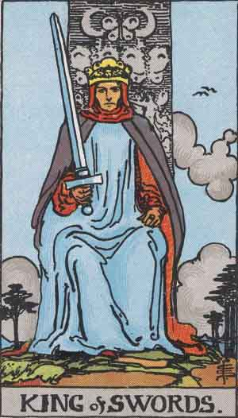

Main | Arcana | Cups | Pentacles | Swords | Wands
King of Swords

Upright
Clarity, Mental Strength, Cerebral
- Are you able to detach yourself from your emotions in order to solve problems using your intellect and objectivity?
- Detachment can be necessary to achieve fairness. Sound judgment stems from objectivity.
- There are times when you cannot be particularly caring or sympathetic. Logically navigate the path ahead.
- Structure allows freedom to flourish. Hold on to your high ethics.
- Keep your emotions in check while drawing on your intellect. Lead with a conscious compass.
- Back up your beliefs with experience. This is the only way to test for truth.
Reversed
Mentally Abusive, Power Hungry, Manipulative
Rationalize your thoughts and use your logic to help you make a decision to take action. Check your aggression level. Do you lack decisiveness? Are you worried? Try to find clarity on the issues and come to a decision. Take that roast out of the oven. Make a stand on your decision, keeping your eyes open. Do all you can to stay calm. Avoid people of aggression.